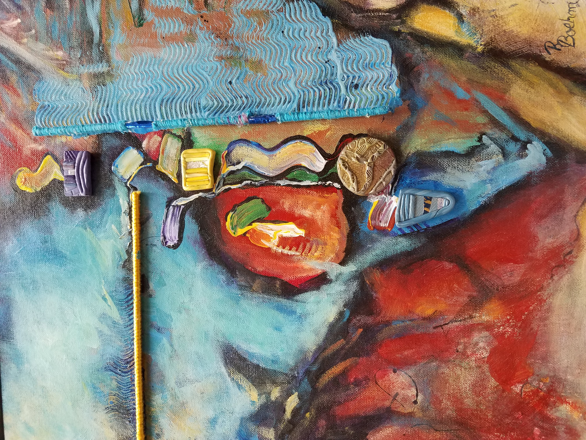
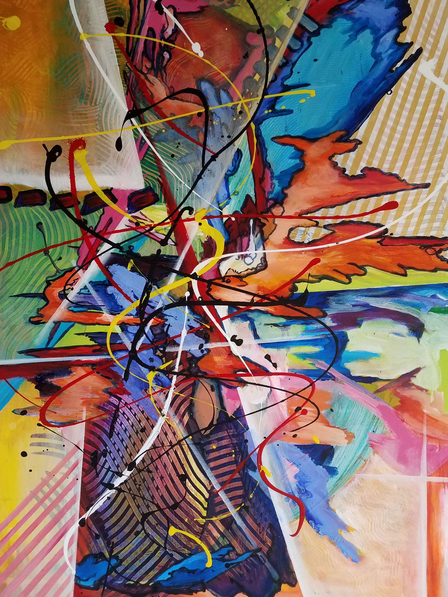
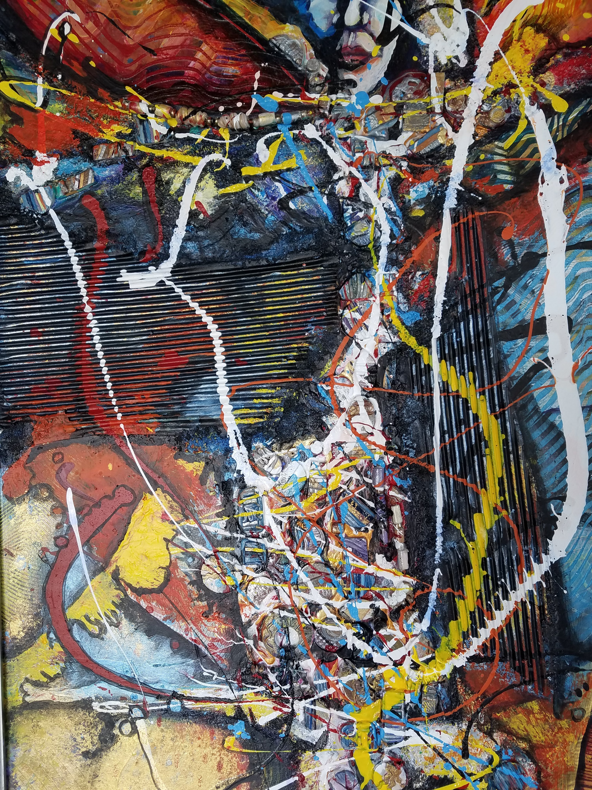
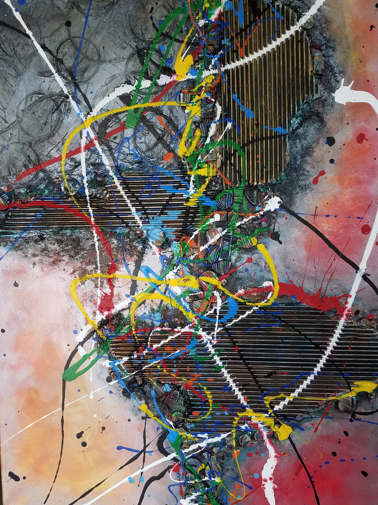
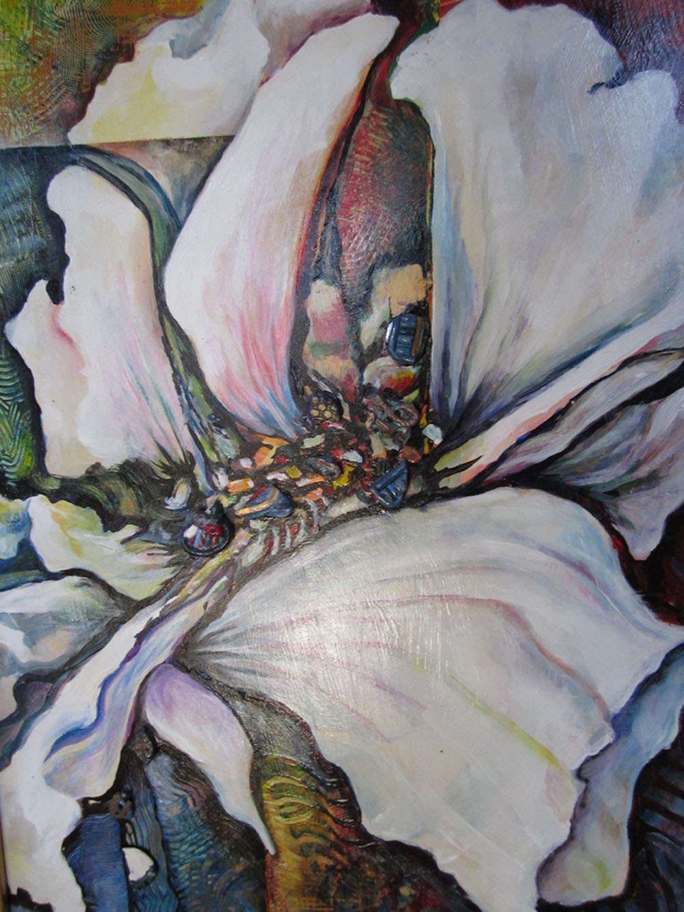
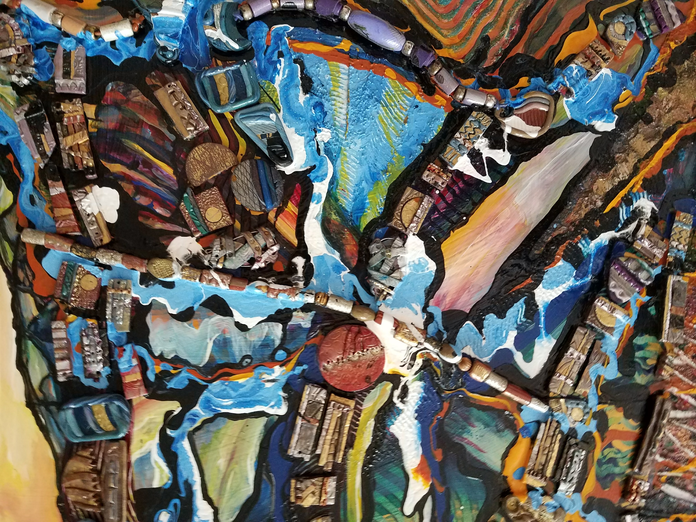

Rejuvenated RedSeasonal Progression #1Seasonal Progression #2Pin-Jack-Color -Iti #2Textured Diptych #1Textured Diptych #2White Flower UnravelingSOLDSeed, Farmer, GatherersIridescent Primaries ShatteredConning and A Little ConnivingSplintered PrimariesPin-Jack-ColorHard and Soft Levels of Primary ColorsCountry Dive – Jewelry Ladies SeriesSpirit Lady – Jewelry Ladies SeriesThat's A Thought – Jewelry Ladies SeriesJust a Moment – Jewelry Ladies SeriesNostalgic – Jewelry Ladies SeriesCountry Diva – Jewelry Ladies SeriesVillage WatcherMigraine and the Jewelry Lady or Mother of a TeenagerWhite FlowerWhite Shed20171210_10494620171209_094725